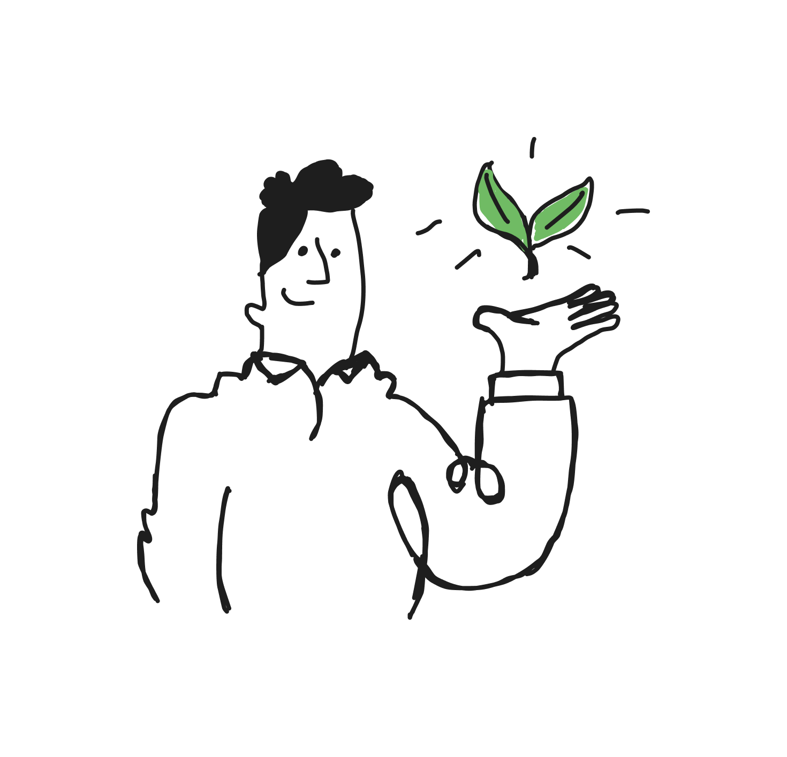

Advancing Sustainability Science, Policy, and Innovation for a Greener Future
Environmental scientist, professor, and policy advisor specializing in water quality, circular economy, and biotechnological solutions for sustainable development.
About Dr. Gradilla Hernández
Dr. Misael Sebastián Gradilla Hernández is an environmental scientist and research professor, recognized for his leadership in sustainability, climate change, and water resource management.
He has served as General Director of Environmental Protection in the
Government of Jalisco, led pioneering research at
Tecnológico de Monterrey, and collaborates with leading universities globally, including
UC Davis and the University of Leeds.
Dr. Gradilla Hernández has authored 65+ scientific publications and contributed to impactful public policy and environmental innovation in Mexico and beyond.
Areas of Expertise
Water & Environmental Quality
Monitoring, assessment, and restoration of rivers and lakes, with a focus on innovative solutions for pollution control.
Circular Bioeconomy
Development of circular economy strategies for agro-industrial waste, including tequila vinasses and livestock residues.
Biotechnological Innovation
Application of microalgae, anaerobic digestion, and advanced bioprocesses for sustainable waste and water treatment.
Science-Based Policy & Consulting
Design and implementation of evidence-based public policies for environmental protection and sustainable development.

Key Projects & Initiatives
Restoration roadmap for the Río Santiago Basin (UC Davis, Tec de Monterrey, 2024–2025)
“Jalisco Reduce”: Statewide program for integrated waste management and circular economy
Development of water quality indices and real-time monitoring systems for Mexican rivers
Climate Skills for Young Researchers (British Council, 2025)
Multiple funded research projects in water, waste, and climate innovation
“Yeast-filamentous fungi co-culture: A circular bioeconomy approach for distillation stillage treatment…” (Sustainable Chemistry & Pharmacy, 2025)
“Integrating sensor data and machine learning to advance the science and management of river carbon emissions…” (Critical Reviews in Environmental Science and Technology, 2025)
“Consequential life cycle assessment of pretreatment strategies for a microalgae-based wastewater treatment…” (Algal Research, 2025)
Teaching & Mentorship
Courses taught: Advanced Sustainable Development, Water Use, Bioprocess Engineering, Thermodynamics
Mentor & supervisor for over 15 graduate theses (MSc & PhD)
Organizer and speaker at numerous national and international scientific conferences
Public Policy & Consulting
Advisor for environmental policy development for the State of Jalisco
Co-author of major environmental programs and legislation (e.g., “Jalisco Reduce”, water quality standards)
Consultant for international partnerships on circular economy, bioenergy, and water management
Science Communication & Outreach
Speaker at United Nations Climate Change Conferences (COP27–COP29)
Invited expert on TV, radio, podcasts, and public forums about water, sustainability, and the environment
Organizer of workshops and educational events for scientists, students, and the public
Contact & Collaboration
Open to research, consulting, and public engagement opportunities.
Let’s work together to advance sustainability and make a difference!